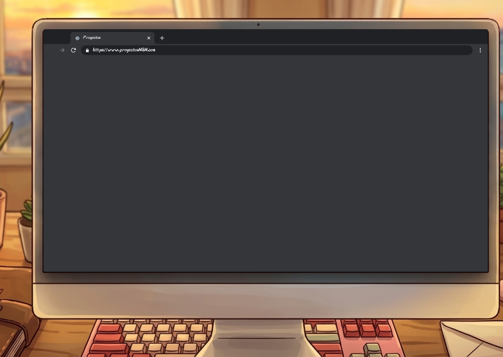
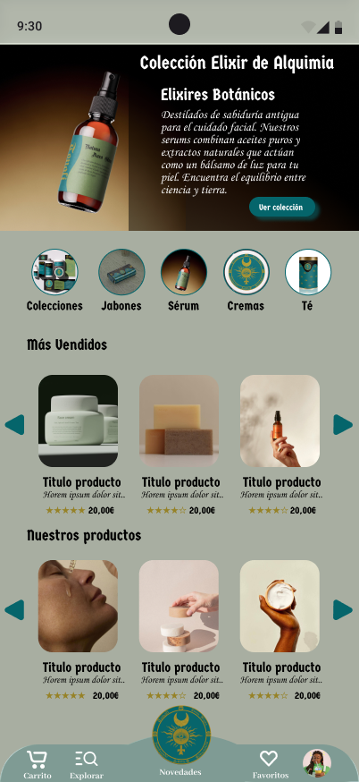
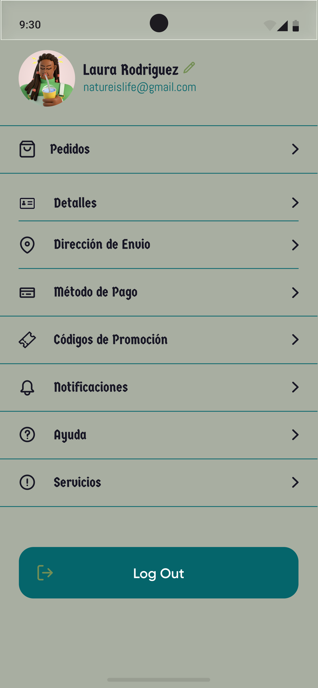
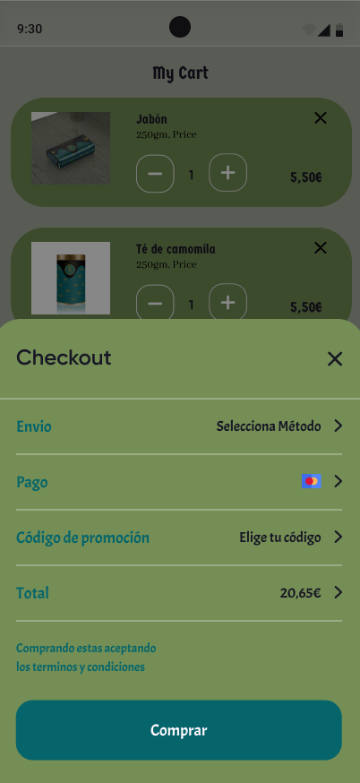
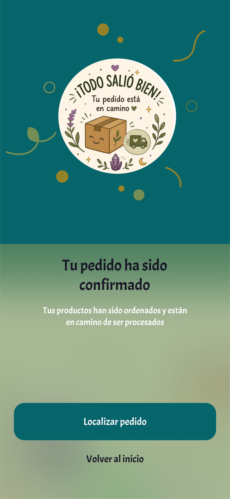

Puntos fuertes
La App de Tonali se sitúa en un "punto dulce": ofrece la confiabilidad y claridad de una gran marca de cosmética, pero envuelta en la exclusividad y el misticismo de un taller de alquimia tradicional.

App móvil · UX / UI
Tras la creación de la entidad visual, pasamos a la creación de una app cómoda para la compra y servicios de seguimiento de envios para Tonali.
 Desliza ↓
Desliza ↓
Diseñar y desarrollar una plataforma de e-commerce móvil (App) que traduzca una identidad visual densa y esotérica en una interfaz funcional, intuitiva y limpia. El reto principal fue equilibrar el storytelling místico con una experiencia de usuario (UX) eficiente, facilitando la compra de productos artesanales (serums, tés y jabones) sin perder la atmósfera de "ritual" que define a la marca.
Para el desarrollo de la App, se analizaron tres perfiles de competidores, las marcas de cosmética natural estandarizadas que tienen navegación rápida, fotos de productos minimalistas pero hay falta de experiencia. Tiendas esotéricas que conectan con lo emocional profundo pero estan demasiado saturadas y tienen procesos de pago poco fiables. Y las marcas artesanales que apenas tienen presencia móvil, ahí es donde esta nuestra oportinidad.
La App de Tonali se sitúa en un "punto dulce": ofrece la confiabilidad y claridad de una gran marca de cosmética, pero envuelta en la exclusividad y el misticismo de un taller de alquimia tradicional.




El proceso de diseño de Tonali supuso encontrar un equilibrio entre una identidad visual cargada de simbolismo celta y una interfaz sencilla e intuitiva, capaz de facilitar el proceso de compra sin perder la personalidad de la marca.
En las primeras versiones se planteó utilizar una tipografía celta en todos los encabezados, botones y elementos de navegación para reforzar la identidad visual de Tonali y transmitir su esencia en cada apartado de la aplicación.
Tras comprobar que esta tipografía dificultaba la lectura rápida y la navegación, decidimos limitar su uso a los títulos de las colecciones y elementos decorativos. Para el resto de la interfaz incorporamos una tipografía sans-serif geométrica y limpia, mejorando la legibilidad y manteniendo el carácter visual de la marca.
Exploramos cómo integrar los elementos simbólicos y decorativos de la identidad de Tonali dentro de una interfaz de compra, buscando que la estética tuviera presencia sin interferir en las acciones principales del usuario.
Priorizamos una estructura más minimalista y funcional, reduciendo el protagonismo de los elementos decorativos en las zonas de interacción. De esta manera, conseguimos mantener la personalidad de Tonali sin comprometer la claridad de la navegación ni el proceso de compra.
Este proyecto me enseñó que la identidad visual no debe convertirse en un obstáculo para la experiencia de usuario, sino funcionar como un vehículo para transmitir la personalidad de una marca. Encontrar el equilibrio entre la simbología celta y una interfaz funcional permitió construir una experiencia coherente, donde la estética y la usabilidad conviven sin competir entre sí.
Dedicaría más tiempo a validar las decisiones tipográficas y visuales desde las primeras fases del proyecto, especialmente en dispositivos móviles. También exploraría diferentes formas de integrar la simbología de la marca en pequeños detalles de interacción, permitiendo reforzar su identidad sin sobrecargar la interfaz.